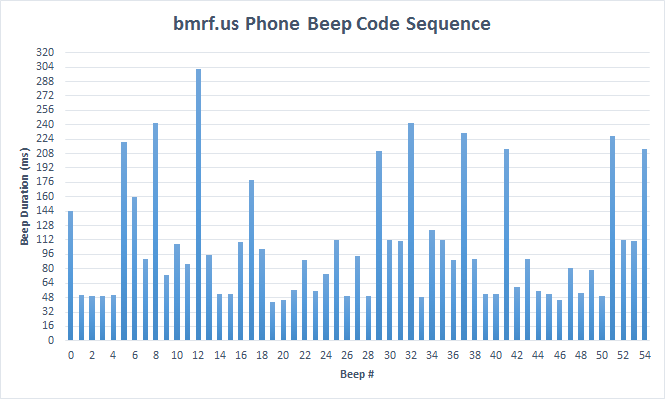

Hey by the way guys, it’s not *21 that brings up the SHUTTING DOWN playback, but just pressing the one key in general, not immediately after *.
Sorry if this was pointed out, I read the last page and the first bit of this page.

Hey by the way guys, it’s not *21 that brings up the SHUTTING DOWN playback, but just pressing the one key in general, not immediately after *.
Sorry if this was pointed out, I read the last page and the first bit of this page.
I have tried to measure the durations of each beep in the beep code sequence from the bmrf.us phone message. Measuring the length of each beep accurately by hand is painstaking work, and in many cases the edges of the beeps aren’t clearly defined due to some noise blips in the audio. I plotted the results in this chart:
[attach=5104,none,665][/attach]
I tried various units for the grid on the vertical axis, but a 16 ms grid seemed to fit nicely with many of the beeps, which could mean that the smallest time unit could be 16 ms.
What I’m looking for is whether the durations could be quantized, in other words, see if they could be representations of discrete data values.
But I’m not sure what to make of the results. The values seem to be all over the place. While some seem to fit on the 16 ms grid, others don’t. I don’t know if that’s due to inaccurate readings. More work would be needed to check if that might be the case.
If we are indeed dealing with a time unit of 16 ms, then the beeps that are close to the 48 ms grid line seem to represent the smallest value, 0. The largest value would be the one close to 304 ms, which would have a value of 16. This means we have a coding system that has at least 17 discrete symbols. I was hoping it would be hex (16 symbols), but apparently it’s not.
EDIT: In case anyone wants to do something with it or compare results, here’s the actual data from the beep duration measurements:
[spoiler]
Beep #;Duration (ms)
0;144.399
1;50.7937
2;49.3424
3;49.3424
4;50.7937
5;220.59
6;159.637
7;91.4286
8;242.358
9;72.5624
10;107.392
11;85.6236
12;301.859
13;95.7823
14;52.2449
15;52.2449
16;110.295
17;178.503
18;101.587
19;43.5374
20;44.9887
21;56.5986
22;89.9773
23;55.1474
24;74.0136
25;111.746
26;49.3424
27;94.3311
28;49.3424
29;211.156
30;111.746
31;111.02
32;242.358
33;48.6168
34;123.356
35;112.472
36;89.9773
37;230.748
38;91.4286
39;51.5193
40;51.5193
41;213.333
42;59.5011
43;91.4286
44;55.873
45;51.5193
46;44.9887
47;81.2698
48;52.9705
49;79.093
50;49.3424
51;227.846
52;112.472
53;111.02
54;212.608[/spoiler]

Something to note about the phone number is that if left on the eas it will hang up after about five minutes.
something I just thought of, I notice that storm plays a good chunk of time in game. Doing what??? I know nothing of programming or game making I don’t know if things are corrected via console in game. What if there was someone waiting in one of the servers on a certain map at certain times? Possible?
He plays the most fun part of Black Mesa known to man:
Hammer Editor.
Yeah, there’s (likely) nothing ARG-related to it, running the BM version of Hammer just counts as being ingame for Steam.
Has anyone tried “317” yet?
Something else I have been working on, that I think warrants a closer look, to someone who would know how to do this. I’m trying to handjam it, so if anyone could run this and translate it in this way. For anyone that programs, I’m assuming this would be easy to emulate, I have found lots of online tools that can do it, but I don’t understand any of the programming portion of it.
A couple of ideas here, feed back would be appreciated. KXBM.NET, when the info was first being built for that website, it was referred to as KSBM. One theory i’m working on is a type of QPSK, which is a way of modulating and demodulating a signal. Look at diagrams for this, and reading about this, seems plausible. The second thing, is perhaps, the info that was received in the message, the “752 text” What if its a signal being set to a receiver that was not properly decoded. For instance a signal from a pc to a printer, or a signal to a network. For instance, PARALLEL TO SERIAL, OR SERIAL TO PARALLEL. So take a look and tell me what you think. Also, if someone can run a simulation of this, that would be awesome.
I really think this is a clue–the octadog suggest 8, most likely 8-bit/byte. And the whole “mirror image” thing going on here with the pizzas. Storm has said multiple times that the answer is all around us–maybe it has something to do with the number of pepperonis? I would suggest 56-bit block size, but there are only 53 pepperonis. 
[attach=5130,left][/attach]
For some reason i cant see that image? is it hosted anywhere?
was hoping someone could run something like this against what we have, hand jamming it takes forever.
1012 may be high-low zig zag code. or, 1012= 112 … if it goes from a number to a higher number its 1, if it goes to another higher number that is 2, then another higher, 3, if a number matches the next number, it is 0. if its high number to low number it is 1, if its a number to a lower number that’s 1 to another lower number that would be 2 and so on.
13511012 would be 1210112, 121212 would be 11111…
Sorry about that! Fixed it!
I think the fact that we have not heard anything from Storm in a long while (despite his busy schedule) indicates that we are missing something big, and the only way he could help us further would be to point us right to it–which he obviously can’t/won’t do.
With this in mind, I took a harder look at some of the earlier clues, and wanted to point something out that I think is important. This has been noted before, but I don’t think we ever followed up with it.
A comment found in the audio of Code C after the Steam release and IRC Clue 5 both point to the two cryptographers, Benaloh and Paillier.
Comment found within Code C: “Oh looky, Dr Horn has gone all open source. HALOS musn’t see this, but the password to its area, is those two cryptographer peoples. I think you should get that ok. I’ll be in Xen if you need me.”
IRC Clue 5: “This is a message left for Dr. Horn. Just to remind you in case of emergencies that the password to the HALOS files is BENALOHPAILLIER. I have programmed HALOS to send in level seven cases. You should bring pizzas.”
We are obviously missing something very important. What could we have missed that is open source? Technically, open source can refer to any software that has had its source code released, usually with the intent of allowing the public to collaborate. Do we know of any open source software related to cryptography? Or, could it point to something with Benaloh and Paillier that was released to the public? I really think this is most likely pointing at a precise type of cryptography, one that is either obscure or difficult to crack.
As far as I’m concerned, open source just indicates to me that the tools we need are available online–such as a decrypter for Benaloh and Paillier.
EDIT: I’m still fussing over the whole phone number thing on “bmrf.us” too. If you try to go to the DALSystems login screen, it says to contact the IT department at extension 12. This is where we get that second message taken from the video.
I also tried to enter some of the extensions from the whiteboards throughout the game, to no avail.
I’ve begun to also research the whiteboards with Horn’s writing on them in the hopes it will help us determine more about the Halos File. For instance, the whiteboard with “Don’t tell Junek!” on it mentions 32 lenses, which may be an extremely vague hint at 32-bit block sizes. A farfetched clue, to be sure, but I’m looking everywhere I can!
On a final note, even if we do know the type of cipher this is, I’m not sure how we’re going to solve it using accessible software off the internet. Most of the decrypt tools I use are broken or unreliable, and when I was able to solve the SECOM cipher, it was done using a program that Storm (disguised as Code_) directed me to. Kind of frustrating to think that we might actually have the answer, but the tools available to us are limiting our ability to solve it.
I’d like to throw a couple things out there. The pizza is a lie, and benalohpaillier. Plus 2548258. If we assign corresponding numbers to the letters, a=1, b=2, and so on, then remove the duplicates, we are left with, thepizasl. Then re-assign what we have in order we get.
832649175
Now if we spell out 2548258 according to our order, it spells ELITE LT. This could mean a couple of things, one, LUBY TRANSFORM code or a variation of it, for instance tornado code. Which could fit, especially if that jet prop is actually a tornado and not a harrier, they look very very similiar. There is also LITE LTE, which is in reference to cellular and wireless. And lastly, I’m also trying to put the 752 text in order of a zig zag variation of a rail fence known as a “redefence” cipher, oddly enough the person who coined that went by the name RED E. RASER. funny being that LUBY TRANSFORM and tornado is a class of ERASuR code. So I’m hand jamming the text under different lengths, which is a pain because I don’t have an equation to populate it up in the following manner. Longer of course because we need at least 9 to 10 rails. So doing it one at a time then changing the order or length is a nightmare to do by hand so PLEASE PLEASE PLEASE if you. Can align it quickly in thst order, please send me a message and I’ll five you what I have so far.
Example
I have a feeling we should ignore the BENALOHPAILIER comment when it comes to the 752 Hex Code. Notice how in IRC Clue #5 it says “… the password to the HALOS files…” as in plural. We’re only dealing with only one of the HALOS files when it comes to the 752 hex code.
That’s a good point. The name of the .txt file seems to correspond with this theory. If this is the case, is it possible we are looking for another chunk of code somewhere? I know Storm’s profile site is online, which prevents us from accessing the original HALOS file, but perhaps there’s another server somewhere that is hosting the file.
Another thing that has struck me is that we keep referring to HALOS as if it’s some sort of operating system, but I’ve started to wonder if it is in fact referring to halos. We have multiple clues surrounding Lucifer, satan, God and Dante’s Inferno. That, to me, suggests that the code may actually have to do with literal halos, as in angels.
Perhaps we can dedicate some time to investigating this potential lead. I will start digging to see if anything makes sense within the context of the ARG.
EDIT: I think we should also focus primarily on the information Storm added to the original post of this thread:
"Handy Info
[INDENT]
STORYLINE SO FAR[/b]
[b]
??? (You’ll have to write this yourselves  - It might help…)"[/b]
- It might help…)"[/b]
There must be something here–quite frankly, there has to be. Also notice how he has written “Halos”–that indicates to me that it may not necessarily be HALOS, but that he originally named the file that way for a reason–most of the past codes were written the same way, so our assumption that it’s something-Operating System may simply be a misnomer.
Sorry to make a new post right after my other one, but I didn’t want it to get too unwieldy with the images included in this one.
I was searching for any hidden links or images that might be found within the bmrf.us site, and I stumbled upon an index of all the images on the site: Index of /img
I attempted to visit the actual bmrf.us/img directory, but it was forbidden. Most of the images contained within it are used on the first page of the site, but there are four that are not included anywhere that I can find:
“hev”
“sectroc”
“working”
“zero-point”
I’ve included them below:
[attach=5157,none,416][/attach]
[attach=5158,none,275][/attach]
[attach=5159,none,183][/attach]
[attach=5160,none,181][/attach]
Now, I don’t know if these images were meant to be hidden, or perhaps they are simply used on a page that I never visited and overlooked.
I tried opening them in Notepad to look for any hidden messages (like I did with the header images on the front page), but I didn’t find anything. I also noticed that they are all kind of washed out, so I opened them in Gimp and attempted to find any hidden messages by messing with the color, saturation, and brightness levels–all to no avail.
I’m not sure if these images are important, or if they have been found before, but the Sector C and Zero-Point Energy Field Manipulator images could definitely be linked to the ARG.
I love how the ZEM is in it’s dark energy form in that picture. Either whoever took the picture was being cheeky or Black Mesa actually had Dark Energy technology, either way cool to think about.
Hmm… That’s an interesting lore question.
When the Combine attacked Earth initially… what did they use for soldiers? Not Xenians like Vortigaunts. Not Race X. The Overwatch and Combine soldiers weren’t a thing until later, after they had already taken over Earth. Breen could’ve easily given the Combine dark energy technology, if it was something that was researched in Black Mesa.
…Was HALOS something that the Combine got its hands on, too? If so… did we encounter it in Half Life 2, anywhere? …Was it hidden on the Borealis?
I apologize, I was thinking Half Life 3 confirmed memes again.
After a google search for those images i was able to conclude that they are just edited versions of stock images. Hev.png seems to be a fan made wall paper. Sectorc.png seems to be something from umbrella corporation. Working.png is also a stock image that is for some reason used by a company called motolube. Zero-point.png is obviously just a gordon freeman cosplay. They seem to be stock images.
Founded in 2004, Leakfree.org became one of the first online communities dedicated to Valve’s Source engine development. It is more famously known for the formation of Black Mesa: Source under the 'Leakfree Modification Team' handle in September 2004.

{kind=link}